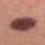

Virtual Dermatoscope

- Ulcerated lesion on right postauricular region of a 73 year old man
- Palpable lesion on a 35 year old man’s chest
- A flat pigmented lesion on a 73 year old man’s ear
- A pigmented lesion on the trunk of a 59 year old man
 A pigmented lesion on a young woman’s arm
A pigmented lesion on a young woman’s arm- A palpable pigmented lesion on a 68 year old woman’s leg
- An ill defined erythematous scaly lesion on a the forehead
- A pigmented lesion on a 36 year old man’s chest
- An erythematous lesion on a young girl’s thigh